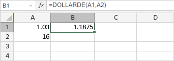

DOLLARDE funkcija
DOLLARDE funkcija je jedna od finansijskih funkcija. Koristi se za konvertovanje cene u dolarima izražene kao razlomak u cenu u dolarima izraženu kao decimalni broj.
Sintaksa
DOLLARDE(fractional_dollar, fraction)
DOLLARDE funkcija ima sledeće argumente:
| Argument | Opis |
|---|---|
| fractional_dollar | Celobrojni deo i razlomljeni deo razdvojeni decimalnim simbolom. |
| fraction | Celobrojna vrednost koju želite da koristite kao imenilac za razlomljeni deo vrednosti fractional_dollar. |
Napomene
Na primer, vrednost fractional_dollar izražena kao 1.03 tumači se kao 1 + 3/n, gde je n vrednost argumenta fraction.
Kako primeniti DOLLARDE funkciju.
Primeri
Slika ispod prikazuje rezultat koji vraća DOLLARDE funkcija.
